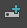

打开“节点编辑器”(Node Editor)
若要创建节点，请执行以下操作：
创建节点（方法 1）：
- 按 Tab 键，然后输入节点的类型。
可以为要创建的节点输入关键字。输入关键字后，“节点编辑器”(Node Editor)将实时更新，并且仅显示其名称与您输入的名称相匹配的节点。如果关键字显示在节点名称的中间，则该节点也将显示在搜索结果中。
提示： 按 Enter 键创建可用节点列表中的第一个节点。在以下示例中，按 Enter 键将创建 polyCube 节点。
提示： 如果仅有一个节点与您的输入相匹配，则按 Enter 键会自动创建该节点。在该示例中，按 Tab 键时会自动创建 polySphere 节点。
注： 如果尝试创建 Maya 中不存在的节点类型，将显示错误消息，提示您无法创建节点。Tab 键创建 UI 仍保持打开状态，以便您更正错误。
创建节点（方法 2）：
- 在“节点编辑器”(Node Editor)的任意空白区域上单击鼠标右键以访问工作区标记菜单，然后选择“创建节点”(Create Node)。
- 使用鼠标中键将节点拖动到“节点编辑器”(Node Editor)中，然后将其放到所需的位置。或者，也可以单击所需的节点，它将显示在“节点编辑器”(Node Editor)中。
创建节点（方法 3）：
- 单击节点编辑器工具栏上的  以打开创建节点窗格。
-
使用鼠标中键将节点从创建节点窗格拖动到“节点编辑器”(Node Editor)工作区中。或者，也可以在所需的节点上单击鼠标左键，它将显示在工作区中。